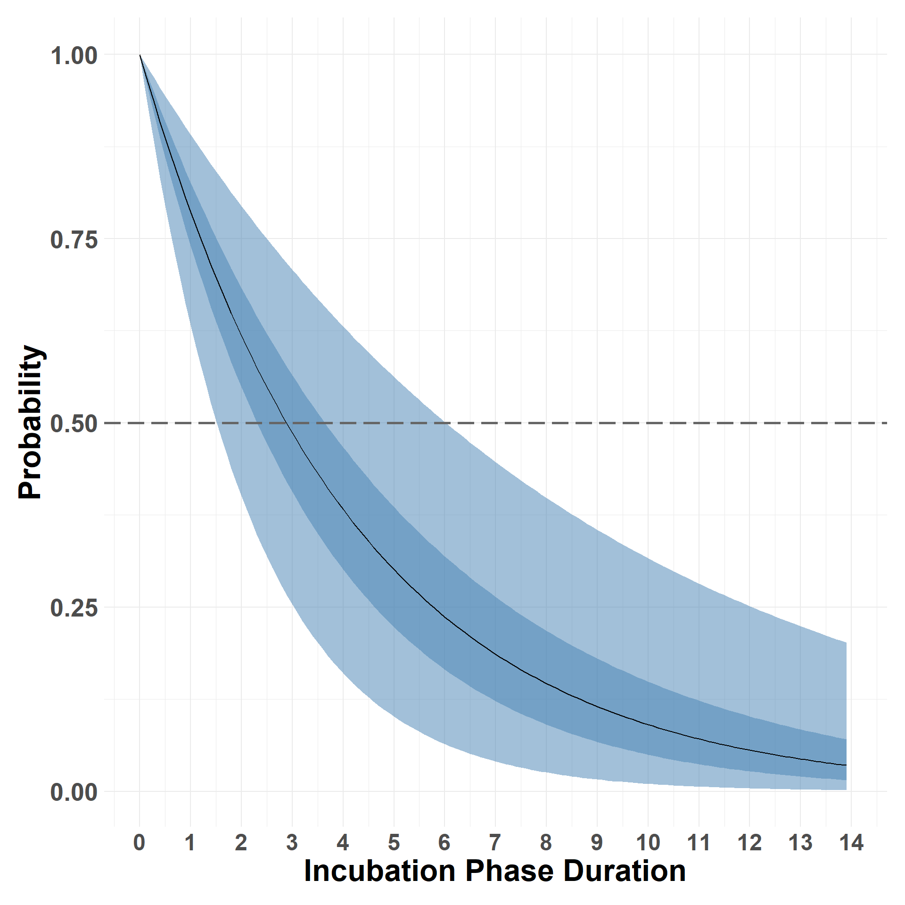
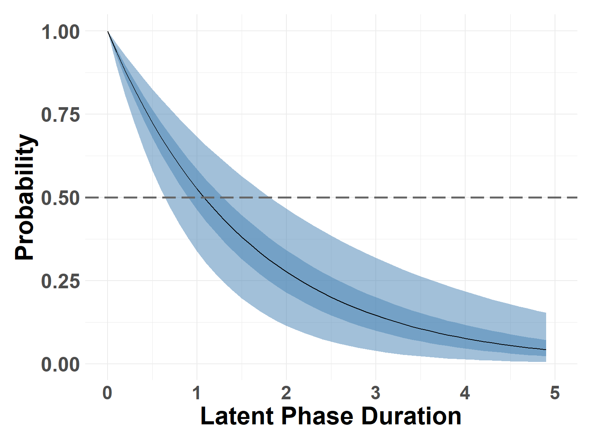
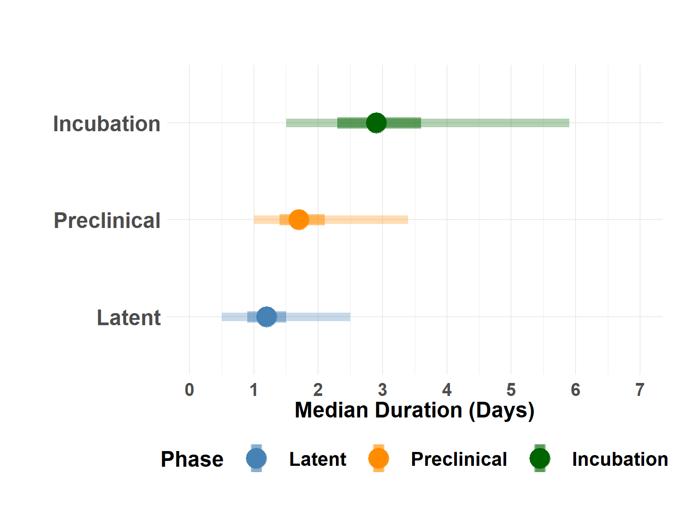
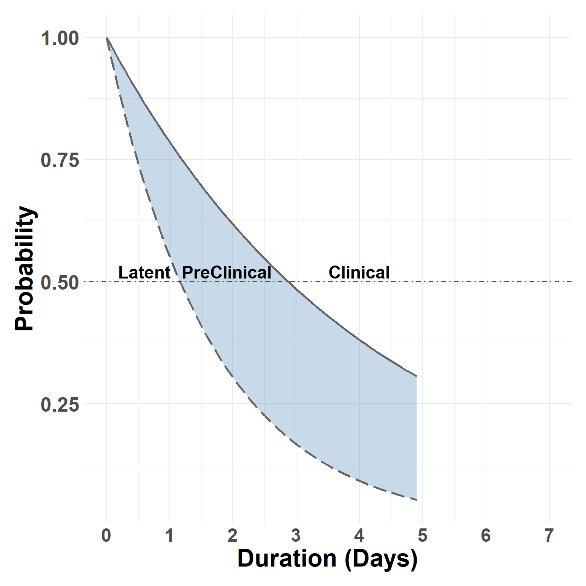

Phase Duration
Description
The script demonstrates use of time-to-event models for estimating FMD phase durations.
Incubation Phase
Clinical Onset
The find_clinical_onset() function identifies first occurrence of score > 0 then creates new “Event” column with 1 at this date, 0’s before this date, and a value 3 after that date.
Hide code
clin_start_df <- as.data.frame(
find_clinical_onset(antem_df)
)Prepare Data
Remove Group 1: This group was not infected and has no expectation of developing disease.
Hide code
clin_start_df <- clin_start_df %>%
filter(group != "Group 1",
Event == 1 | censor_status == 0 & censor_k == 1)Scale Time
Add an arbitrarily small value to eliminate zeros. Really not need with his specific data set, by an important step.
Hide code
clin_start_df$scaled_duration <- clin_start_df$dpe + 0.0001Weighted Contacts
Contact with groups by donors was sequential at 24hr intervals, shedding rates (nasal swabs) varied over this period.
Hide code
shed_rates <- antem_df %>%
filter(group == "donor") %>%
group_by(dpi) %>%
summarise(tot_shed = sum(ifelse(nasal == 45, 0, nasal), na.rm=T)) %>% # 45 indicates non-detection
mutate(group = paste("Group", dpi, sep=" "))
# match cumulative shed from donors based on time of contact
clin_start_df$donor_shed <- with(shed_rates,
tot_shed[match(
clin_start_df$group,
group)])
# an integer index is needed, group contacts are correlated with time
clin_start_df$shed_time <- as.integer(as.factor(clin_start_df$group))Survival Models
Creating a survival model object.
Hide code
surv_obj <- inla.surv(clin_start_df$scaled_duration, clin_start_df$Event)Parametric model for study-wide average duration.
Hide code
return_quants <- c(0.025, 0.05, 0.25, 0.5, 0.75, 0.95, 0.975)
pc_prec_iid <- list(theta = list(prior="pc.prec",
param=c(0.5, 0.001)))
incubation_dur <- inla(surv_obj ~ 1 +
f(shed_time, donor_shed,
model = "rw1",
constr=TRUE,
scale.model = TRUE,
hyper=pc_prec_iid),
data = clin_start_df,
verbose=FALSE,
quantiles = return_quants,
family = "exponential.surv",
control.fixed = list(prec = 1, prec.intercept = 0.0001),
control.compute=list(dic = TRUE, cpo = FALSE, waic = TRUE))An additional confirmatory model framework.
Hide code
return_quants <- c(0.025, 0.05, 0.25, 0.5, 0.75, 0.95, 0.975)
pc_prec_iid <- list(theta = list(prior="pc.prec",
param=c(0.5, 0.001)))
incubation_aft <- inla(surv_obj ~ 1 +
f(group,
model = "iid",
constr=FALSE,
hyper=pc_prec_iid),
data = clin_start_df,
verbose=FALSE,
quantiles = return_quants,
family = "lognormal.surv",
control.fixed = list(prec = 1, prec.intercept = 0.0001),
control.compute=list(dic = TRUE, cpo = FALSE, waic = TRUE))Sample Marginals
Performing sampling on the parametric model results
Hide code
incubation_samples <- compute_survival_marginals(incubation_dur, 14)Check estimates at the 0.5 probability (median)
Hide code
median_incubation <- find_closest_quant(incubation_samples, 0.5)Incubation Curve
Exceedance survival curve.
Hide code
plot_survival_marginals(incubation_samples, x_max = 14, xlabel = "Incubation Phase Duration")
save incubation samples:
These files are saved on the project’s /assetsdirectory for later use.
Hide code
saveRDS(incubation_samples, here("assets/incubation_samples.rds"))
saveRDS(median_incubation, here("assets/incubation_median.rds"))
saveRDS(aft_incubation, here("assets/incubation_aft_median.rds"))Latent Phase
Prepare Data
Organize data
Hide code
latent_end_df <- antem_df %>%
filter(nasal >= 4.5 & nasal != 45) %>%
group_by(animal) %>%
filter(date == min(date)) %>%
mutate(latent_end = 1) %>%
ungroup()Scale Time (as prior use)
Hide code
latent_end_df$scaled_duration <- latent_end_df$dpe + 0.0001Survival Models
Response Variable Creating a survival object.
Hide code
surv_obj <- inla.surv(latent_end_df$scaled_duration, latent_end_df$latent_end)Parametric model for study-wide average duration.
Hide code
return_quants <- c(0.025, 0.05, 0.25, 0.5, 0.75, 0.95, 0.975)
latent_end_mod <- inla(surv_obj ~ 1,
data = latent_end_df,
verbose=FALSE,
quantiles = return_quants,
family = "exponential.surv",
control.fixed = list(prec = 1, prec.intercept = 0.001),
control.compute=list(dic = TRUE, cpo = FALSE, waic = TRUE))Confirmatory model for comparison.
Hide code
return_quants <- c(0.025, 0.05, 0.25, 0.5, 0.75, 0.95, 0.975)
pc_prec_iid <- list(theta = list(prior="pc.prec",
param=c(1, 0.001)))
latent_aft_mod <- inla(surv_obj ~ 1 +
f(group,
model = "iid",
constr=FALSE,
hyper=pc_prec_iid),
data = latent_end_df,
verbose=FALSE,
quantiles = return_quants,
family = "lognormal.surv",
control.fixed = list(prec = 1, prec.intercept = 0.0001),
control.compute=list(dic = TRUE, cpo = FALSE, waic = TRUE))Sample Marginals
Performing sampling on the model results
Hide code
latent_samples <- compute_survival_marginals(latent_end_mod, 7)Check estimates at the 0.5 probability (median)
Hide code
median_latent <- find_closest_quant(latent_samples, 0.5)Latent Curve
Hide code
plot_survival_marginals(latent_samples, x_max = 5, xlabel = "Latent Phase Duration")
save latent samples: These files are saved on the project’s /assetsdirectory for later use.
Hide code
saveRDS(latent_samples, here("assets/latent_samples_sim.rds"))
saveRDS(median_latent, here("assets/latent_median_sim.rds"))
saveRDS(aft_latent, here("assets/latent_aft_median_sim.rds"))Preclinical
Comparing incubation and latent phase outcomes.
Hide code
median_preclinical <- Map(function(x, y) x - y, median_incubation, median_latent)
medians_df <- as.data.frame(
rbind(
Incubation = as.data.frame(median_incubation),
Preclinical = as.data.frame(median_preclinical),
Latent = as.data.frame(median_latent)
)
)
medians_df$Name <- rownames(medians_df)
medians_df$Name <- ordered(factor(medians_df$Name), c("Latent", "Preclinical", "Incubation"))Plot study-wide median phases
Hide code
plot_median_phases(medians_df)
Plot Preclinical curve based on study-wide rates.
Hide code
plot_compare_marginals(incubation_samples, latent_samples)